1 Univariate distribution checks
This section reports a series of univariate summary checks of the bacteremia dataset.
1.1 U1: Categorical variables
SEX and BC (bactermia status) are described by frequencies and proportions in each category.
Rows: 7
Columns: 5
$ name <chr> "AGEGR01C", "AGEGR01C", "AGEGR01C", "BACTEREMIA", "BACTEREMIA", ~
$ value <chr> "(50, 65]", "(65, 101]", "[16, 50]", "no", "yes", "female", "mal~
$ freq <int> 4250, 5076, 5365, 13511, 1180, 6155, 8536
$ prop <dbl> 0.28929276, 0.34551766, 0.36518957, 0.91967871, 0.08032129, 0.41~
$ perc <dbl> 28.929276, 34.551766, 36.518957, 91.967871, 8.032129, 41.896399,~| Category | Count | % | |
|---|---|---|---|
| Age group | |||
| (50, 65] | 4250 | 28.9 | |
| (65, 101] | 5076 | 34.6 | |
| [16, 50] | 5365 | 36.5 | |
| Sex | |||
| female | 6155 | 41.9 | |
| male | 8536 | 58.1 | |
| Presence of bactermia | |||
| no | 13511 | 92.0 | |
| yes | 1180 | 8.0 | |
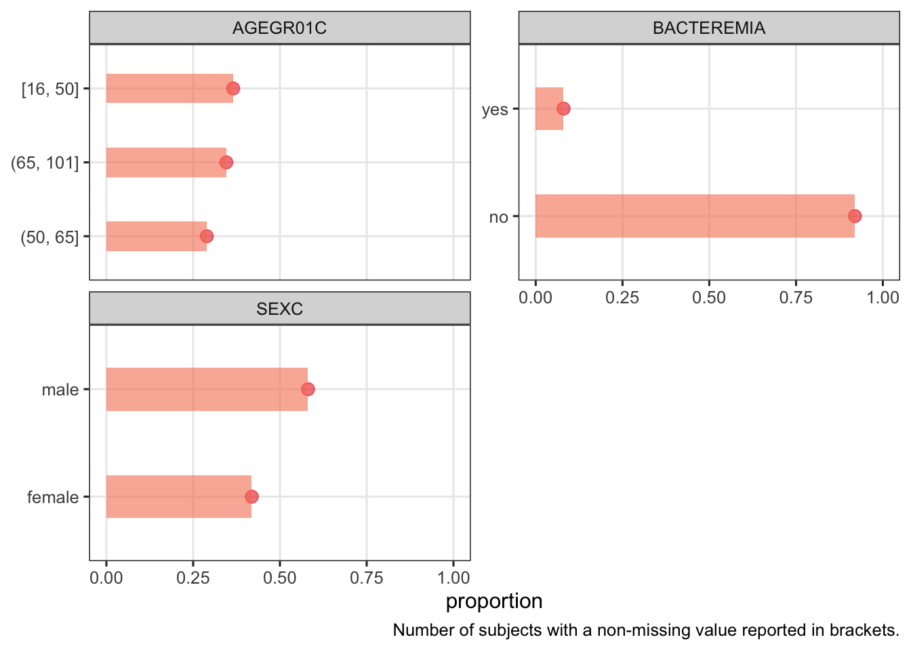
1.2 Continuous variables
1.2.1 U2: Univariate distributions of continuous variables
1.2.1.1 U2: Structural variables
The only structural continuous variables is AGE. This variable is also a key predictor (see below).
1.2.1.2 U2: Key predictors
Note: the structural variable Age is also considered a key predictor.


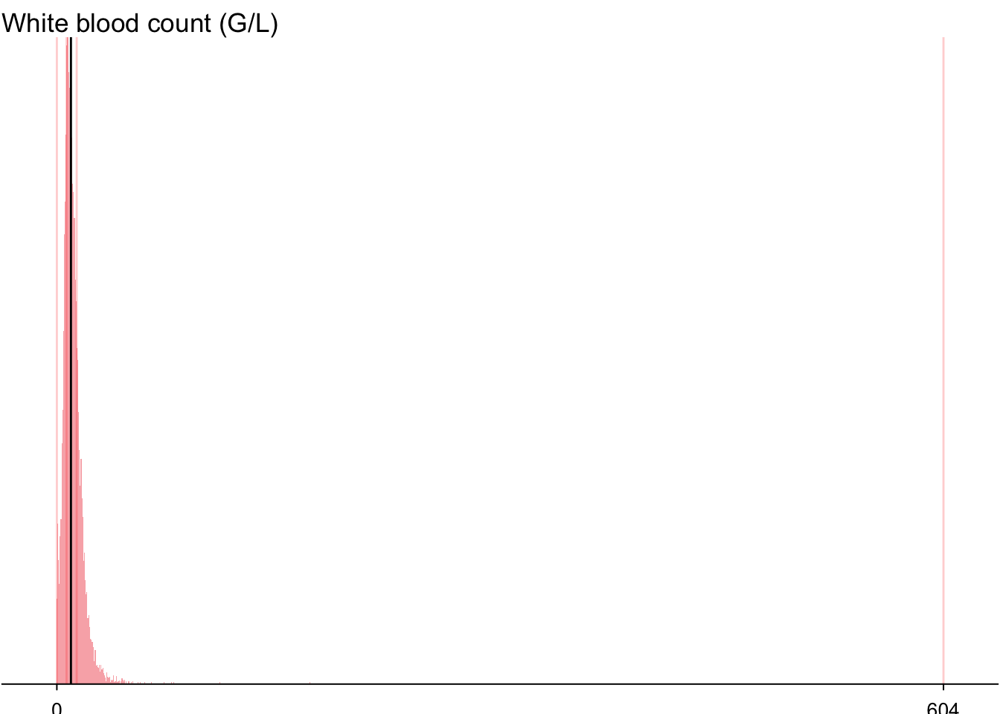
1.2.1.3 U2: Predictors of medium importance


1.2.1.4 U2: Remaining predictors
Warning: Computation failed in `stat_bin()`
Caused by error in `bin_breaks_width()`:
! `binwidth` must be positiveWarning: Computation failed in `stat_bin()`
Caused by error in `bin_breaks_width()`:
! `binwidth` must be positive


1.2.2 Numerical summaries
1.2.2.1 Key predictors
Rows: 41,201
Columns: 4
Groups: PARAM [50]
$ PARAM <chr> "Activated partial thromboplastin time (sec)", "Activated pa~
$ PARAMCD <chr> "APTT", "APTT", "APTT", "APTT", "APTT", "APTT", "APTT", "APT~
$ STATISTIC <chr> "mean", "mode", "sd", "skewness", "kurtosis", "min", "max", ~
$ RESULT <dbl> 40.056399, 35.000000, 10.966640, 4.165706, 29.738017, 21.400~1.2.3 Data Frame Summary
1.2.3.1 dat
Dimensions: 14691 x 6
Duplicates: 0
| Variable | Label | Stats / Values | Freqs (% of Valid) | Graph | Missing |
|---|---|---|---|---|---|
| PLT [numeric] |
Parameter analysis value (Numeric) | Mean (sd) : 220.03 (122.84) min < med < max: 0 < 204 < 2092 IQR (CV) : 137 (0.56) |
718 distinct values | 42 (0.3%) |
|
| CREA [numeric] |
Parameter analysis value (Numeric) | Mean (sd) : 1.33 (1.17) min < med < max: 0.26 < 1 < 20.75 IQR (CV) : 0.54 (0.88) |
674 distinct values |  |
159 (1.1%) |
| BUN [numeric] |
Parameter analysis value (Numeric) | Mean (sd) : 22.66 (18.11) min < med < max: 2.5 < 16.6 < 184.8 IQR (CV) : 15.3 (0.8) |
947 distinct values | 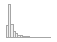 | 172 (1.2%) |
| NEU [numeric] |
Parameter analysis value (Numeric) | Mean (sd) : 8.37 (5.61) min < med < max: 0 < 7.3 < 83.8 IQR (CV) : 6.2 (0.67) |
374 distinct values | 728 (5.0%) |
|
| WBC [numeric] |
Parameter analysis value (Numeric) | Mean (sd) : 11.23 (12.92) min < med < max: 0 < 9.6 < 604.47 IQR (CV) : 6.9 (1.15) |
2710 distinct values |  |
462 (3.1%) |
| AGE [numeric] |
Parameter analysis value (Numeric) | Mean (sd) : 56.17 (18.15) min < med < max: 16 < 58 < 101 IQR (CV) : 27 (0.32) |
85 distinct values |  |
0 (0.0%) |
1.2.3.2 Predictors of medium importance
1.2.4 Data Frame Summary
1.2.4.1 dat
Dimensions: 14691 x 6
Duplicates: 40
| Variable | Label | Stats / Values | Freqs (% of Valid) | Graph | Missing |
|---|---|---|---|---|---|
| FIB [numeric] |
Parameter analysis value (Numeric) | Mean (sd) : 547.36 (208.13) min < med < max: 55 < 529 < 1593 IQR (CV) : 277 (0.38) |
1084 distinct values | 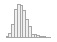 | 2567 (17.5%) |
| POTASS [numeric] |
Parameter analysis value (Numeric) | Mean (sd) : 4 (0.64) min < med < max: 1.92 < 3.95 < 36.62 IQR (CV) : 0.63 (0.16) |
408 distinct values |  |
2008 (13.7%) |
| ASAT [numeric] |
Parameter analysis value (Numeric) | Mean (sd) : 86.9 (404.69) min < med < max: 3 < 31 < 13991 IQR (CV) : 34 (4.66) |
650 distinct values |  |
1154 (7.9%) |
| ALAT [numeric] |
Parameter analysis value (Numeric) | Mean (sd) : 67.66 (311.05) min < med < max: 0 < 26 < 15059 IQR (CV) : 32 (4.6) |
578 distinct values | 987 (6.7%) |
|
| GGT [numeric] |
Parameter analysis value (Numeric) | Mean (sd) : 115.06 (208.98) min < med < max: 3 < 49 < 5171 IQR (CV) : 92 (1.82) |
858 distinct values | 1262 (8.6%) |
|
| CRP [numeric] |
Parameter analysis value (Numeric) | Mean (sd) : 10.92 (9.58) min < med < max: 0 < 8.57 < 76.32 IQR (CV) : 13.58 (0.88) |
3328 distinct values | 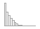 | 155 (1.1%) |
1.2.4.2 Remaining predictors
1.2.5 Data Frame Summary
1.2.5.1 dat
Dimensions: 14691 x 38
Duplicates: 0
| Variable | Label | Stats / Values | Freqs (% of Valid) | Graph | Missing |
|---|---|---|---|---|---|
| MCV [numeric] |
Parameter analysis value (Numeric) | Mean (sd) : 88.35 (6.46) min < med < max: 51 < 88.3 < 128.7 IQR (CV) : 7.3 (0.07) |
506 distinct values |  |
42 (0.3%) |
| HGB [numeric] |
Parameter analysis value (Numeric) | Mean (sd) : 11.57 (2.25) min < med < max: 3 < 11.4 < 21 IQR (CV) : 3.3 (0.19) |
157 distinct values | 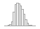 | 41 (0.3%) |
| HCT [numeric] |
Parameter analysis value (Numeric) | Mean (sd) : 34.48 (6.51) min < med < max: 0 < 34.3 < 66.6 IQR (CV) : 9.3 (0.19) |
404 distinct values | 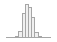 | 42 (0.3%) |
| MCH [numeric] |
Parameter analysis value (Numeric) | Mean (sd) : 29.58 (2.53) min < med < max: 14.9 < 29.7 < 47.4 IQR (CV) : 2.6 (0.09) |
232 distinct values |  |
42 (0.3%) |
| MCHC [numeric] |
Parameter analysis value (Numeric) | Mean (sd) : 33.47 (1.4) min < med < max: 23.7 < 33.5 < 43.5 IQR (CV) : 1.8 (0.04) |
124 distinct values |  |
42 (0.3%) |
| RDW [numeric] |
Parameter analysis value (Numeric) | Mean (sd) : 15 (2.29) min < med < max: 10.6 < 14.5 < 31.8 IQR (CV) : 2.6 (0.15) |
173 distinct values | 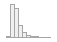 | 56 (0.4%) |
| MPV [numeric] |
Parameter analysis value (Numeric) | Mean (sd) : 10.38 (1.01) min < med < max: 7.3 < 10.3 < 15 IQR (CV) : 1.3 (0.1) |
71 distinct values | 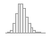 | 702 (4.8%) |
| LYM [numeric] |
Parameter analysis value (Numeric) | Mean (sd) : 1.37 (7.46) min < med < max: 0 < 1 < 578.1 IQR (CV) : 0.9 (5.46) |
114 distinct values |  |
262 (1.8%) |
| MONO [numeric] |
Parameter analysis value (Numeric) | Mean (sd) : 0.85 (0.65) min < med < max: 0 < 0.8 < 20.4 IQR (CV) : 0.6 (0.76) |
67 distinct values |  |
246 (1.7%) |
| EOS [numeric] |
Parameter analysis value (Numeric) | Mean (sd) : 0.11 (0.27) min < med < max: 0 < 0.1 < 15.8 IQR (CV) : 0.1 (2.34) |
36 distinct values |  |
135 (0.9%) |
| BASO [numeric] |
Parameter analysis value (Numeric) | Mean (sd) : 0.02 (0.08) min < med < max: 0 < 0 < 6.5 IQR (CV) : 0 (4.71) |
18 distinct values |  |
146 (1.0%) |
| NT [numeric] |
Parameter analysis value (Numeric) | Mean (sd) : 83.22 (27.15) min < med < max: 4 < 83 < 152 IQR (CV) : 34 (0.33) |
149 distinct values | 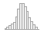 | 2467 (16.8%) |
| APTT [numeric] |
Parameter analysis value (Numeric) | Mean (sd) : 40.06 (10.97) min < med < max: 21.4 < 37.7 < 176.1 IQR (CV) : 8.6 (0.27) |
631 distinct values |  |
2549 (17.4%) |
| SODIUM [numeric] |
Parameter analysis value (Numeric) | Mean (sd) : 137.21 (4.73) min < med < max: 106 < 137 < 170 IQR (CV) : 5 (0.03) |
58 distinct values |  |
1282 (8.7%) |
| CA [numeric] |
Parameter analysis value (Numeric) | Mean (sd) : 2.21 (0.2) min < med < max: 1.03 < 2.22 < 4.4 IQR (CV) : 0.26 (0.09) |
185 distinct values |  |
1276 (8.7%) |
| PHOS [numeric] |
Parameter analysis value (Numeric) | Mean (sd) : 1.05 (0.4) min < med < max: 0.3 < 0.99 < 6.22 IQR (CV) : 0.39 (0.38) |
306 distinct values | 1242 (8.5%) |
|
| MG [numeric] |
Parameter analysis value (Numeric) | Mean (sd) : 0.81 (0.15) min < med < max: 0.2 < 0.81 < 2.22 IQR (CV) : 0.17 (0.19) |
146 distinct values |  |
1869 (12.7%) |
| HS [numeric] |
Parameter analysis value (Numeric) | Mean (sd) : 5.41 (2.45) min < med < max: 1.3 < 5 < 22.7 IQR (CV) : 2.9 (0.45) |
169 distinct values |  |
3061 (20.8%) |
| GBIL [numeric] |
Parameter analysis value (Numeric) | Mean (sd) : 1.41 (2.75) min < med < max: 0.11 < 0.77 < 51.77 IQR (CV) : 0.7 (1.96) |
885 distinct values |  |
1441 (9.8%) |
| TP [numeric] |
Parameter analysis value (Numeric) | Mean (sd) : 64.9 (11.46) min < med < max: 29.9 < 65.7 < 120.9 IQR (CV) : 16.4 (0.18) |
649 distinct values | 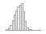 | 1583 (10.8%) |
| ALB [numeric] |
Parameter analysis value (Numeric) | Mean (sd) : 33.42 (7.44) min < med < max: 10 < 33.6 < 55.7 IQR (CV) : 11.2 (0.22) |
401 distinct values | 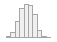 | 1676 (11.4%) |
| AMY [numeric] |
Parameter analysis value (Numeric) | Mean (sd) : 90.83 (805.23) min < med < max: 8 < 49 < 56146 IQR (CV) : 43 (8.87) |
488 distinct values |  |
3913 (26.6%) |
| PAMY [numeric] |
Parameter analysis value (Numeric) | Mean (sd) : 41.66 (448.01) min < med < max: 1 < 22 < 38369 IQR (CV) : 22 (10.75) |
280 distinct values | 7114 (48.4%) |
|
| LIP [numeric] |
Parameter analysis value (Numeric) | Mean (sd) : 63.82 (603.89) min < med < max: 0 < 23 < 45991 IQR (CV) : 26 (9.46) |
444 distinct values |  |
3699 (25.2%) |
| CHE [numeric] |
Parameter analysis value (Numeric) | Mean (sd) : 4.79 (2.1) min < med < max: 0.98 < 4.6 < 13.89 IQR (CV) : 3.07 (0.44) |
997 distinct values |  |
2447 (16.7%) |
| AP [numeric] |
Parameter analysis value (Numeric) | Mean (sd) : 118.78 (132.87) min < med < max: 11 < 84 < 2995 IQR (CV) : 60 (1.12) |
672 distinct values |  |
1400 (9.5%) |
| LDH [numeric] |
Parameter analysis value (Numeric) | Mean (sd) : 331.15 (475.23) min < med < max: 39 < 239 < 13906 IQR (CV) : 145 (1.44) |
1137 distinct values |  |
1714 (11.7%) |
| CK [numeric] |
Parameter analysis value (Numeric) | Mean (sd) : 385.01 (2241.21) min < med < max: 8 < 80 < 98801 IQR (CV) : 142 (5.82) |
1506 distinct values |  |
2080 (14.2%) |
| GLU [numeric] |
Parameter analysis value (Numeric) | Mean (sd) : 126.41 (56.91) min < med < max: 19 < 113 < 1403 IQR (CV) : 41 (0.45) |
389 distinct values |  |
4192 (28.5%) |
| TRIG [numeric] |
Parameter analysis value (Numeric) | Mean (sd) : 141.71 (120.69) min < med < max: 14 < 115 < 5440 IQR (CV) : 82 (0.85) |
538 distinct values |  |
5061 (34.4%) |
| CHOL [numeric] |
Parameter analysis value (Numeric) | Mean (sd) : 150.8 (55.51) min < med < max: 25 < 145 < 1104 IQR (CV) : 69 (0.37) |
339 distinct values |  |
5045 (34.3%) |
| BASOR [numeric] |
Parameter analysis value (Numeric) | Mean (sd) : 0.15 (0.59) min < med < max: 0 < 0 < 23.66 IQR (CV) : 0 (4.03) |
419 distinct values |  |
732 (5.0%) |
| EOSR [numeric] |
Parameter analysis value (Numeric) | Mean (sd) : 1.3 (2.36) min < med < max: 0 < 0.59 < 73.49 IQR (CV) : 1.79 (1.82) |
927 distinct values | 732 (5.0%) |
|
| LYMR [numeric] |
Parameter analysis value (Numeric) | Mean (sd) : 14.61 (12.74) min < med < max: 0 < 11.34 < 100 IQR (CV) : 11.43 (0.87) |
3121 distinct values | 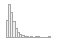 | 732 (5.0%) |
| MONOR [numeric] |
Parameter analysis value (Numeric) | Mean (sd) : 8.79 (5.81) min < med < max: 0 < 8 < 100 IQR (CV) : 5.24 (0.66) |
2334 distinct values |  |
732 (5.0%) |
| NEUR [numeric] |
Parameter analysis value (Numeric) | Mean (sd) : 75.15 (15.53) min < med < max: 0 < 78.33 < 100 IQR (CV) : 16.09 (0.21) |
3850 distinct values | 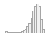 | 732 (5.0%) |
| PDW [numeric] |
Parameter analysis value (Numeric) | Mean (sd) : 12.29 (2.19) min < med < max: 6.6 < 12 < 25.3 IQR (CV) : 2.6 (0.18) |
167 distinct values |  |
1102 (7.5%) |
| RBC [numeric] |
Parameter analysis value (Numeric) | Mean (sd) : 3.94 (0.77) min < med < max: 1 < 3.9 < 8.2 IQR (CV) : 1.1 (0.2) |
65 distinct values |  |
461 (3.1%) |
1.2.6 Suggested transformations
Next we investigate whether a pseudolog transformation of continuous variables may substantially symmetrize the univariate distributions of the continuous variables, and may hence be useful for multivariate summaries. We employ a function ida_trans for this purpose, which optimises the parameter sigma of the pseudo-logarithm for that purpose. The optimization targets the best possible linear correlation of the transformed values with normal deviates. If no better transformation can be found, or if the improvement in correlation is less than 0.2 correlation units, no transformation is suggested.
Register transformed variables in the data set:
1.2.7 Comparison of univariate distributions with and without pseudo-log transformation
The comparison is only shown for variables where a transformation is suggested.
1.3 Section session info
R version 4.1.2 (2021-11-01)
Platform: x86_64-w64-mingw32/x64 (64-bit)
Running under: Windows 10 x64 (build 19044)
Matrix products: default
locale:
[1] LC_COLLATE=English_United States.1252
[2] LC_CTYPE=English_United States.1252
[3] LC_MONETARY=English_United States.1252
[4] LC_NUMERIC=C
[5] LC_TIME=English_United States.1252
attached base packages:
[1] stats graphics grDevices utils datasets methods base
other attached packages:
[1] gtExtras_0.4.5 gt_0.8.0 e1071_1.7-9 Hmisc_4.6-0
[5] Formula_1.2-4 survival_3.4-0 lattice_0.20-45 skimr_2.1.3
[9] summarytools_1.0.0 tidyselect_1.2.0 forcats_0.5.1 stringr_1.4.0
[13] dplyr_1.0.9 purrr_0.3.4 readr_2.1.1 tidyr_1.1.4
[17] tibble_3.1.6 ggplot2_3.4.0 tidyverse_1.3.1 here_1.0.1
loaded via a namespace (and not attached):
[1] colorspace_2.0-2 pryr_0.1.5 ellipsis_0.3.2
[4] class_7.3-19 rprojroot_2.0.2 htmlTable_2.3.0
[7] base64enc_0.1-3 fs_1.5.2 rstudioapi_0.13
[10] proxy_0.4-26 farver_2.1.0 fansi_0.5.0
[13] lubridate_1.8.0 xml2_1.3.2 codetools_0.2-18
[16] splines_4.1.2 knitr_1.38 jsonlite_1.7.2
[19] broom_1.0.1 cluster_2.1.2 dbplyr_2.1.1
[22] png_0.1-7 compiler_4.1.2 httr_1.4.2
[25] backports_1.4.1 assertthat_0.2.1 Matrix_1.3-4
[28] fastmap_1.1.0 cli_3.3.0 htmltools_0.5.4
[31] tools_4.1.2 gtable_0.3.0 glue_1.6.2
[34] Rcpp_1.0.7 cellranger_1.1.0 vctrs_0.5.1
[37] svglite_2.0.0 xfun_0.30 rvest_1.0.2
[40] lifecycle_1.0.3 scales_1.2.1 ragg_1.2.2
[43] hms_1.1.1 rematch2_2.1.2 RColorBrewer_1.1-2
[46] yaml_2.2.1 gridExtra_2.3 pander_0.6.4
[49] sass_0.4.4 rpart_4.1-15 latticeExtra_0.6-29
[52] stringi_1.7.5 paletteer_1.5.0 checkmate_2.0.0
[55] repr_1.1.4 rlang_1.0.6 pkgconfig_2.0.3
[58] systemfonts_1.0.3 matrixStats_0.61.0 evaluate_0.15
[61] fontawesome_0.4.0 rapportools_1.0 htmlwidgets_1.5.4
[64] labeling_0.4.2 plyr_1.8.6 magrittr_2.0.3
[67] R6_2.5.1 magick_2.7.3 generics_0.1.3
[70] DBI_1.1.2 pillar_1.8.1 haven_2.4.3
[73] foreign_0.8-81 withr_2.5.0 nnet_7.3-16
[76] modelr_0.1.8 crayon_1.4.2 utf8_1.2.2
[79] tzdb_0.2.0 rmarkdown_2.11 jpeg_0.1-9
[82] grid_4.1.2 readxl_1.3.1 data.table_1.14.2
[85] reprex_2.0.1 digest_0.6.28 textshaping_0.3.6
[88] munsell_0.5.0 tcltk_4.1.2